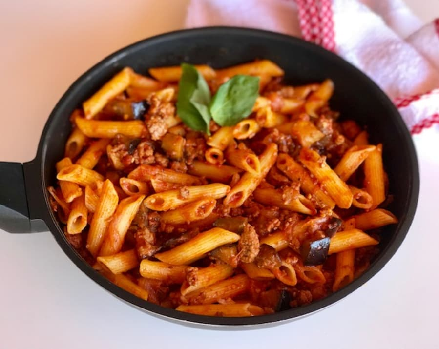
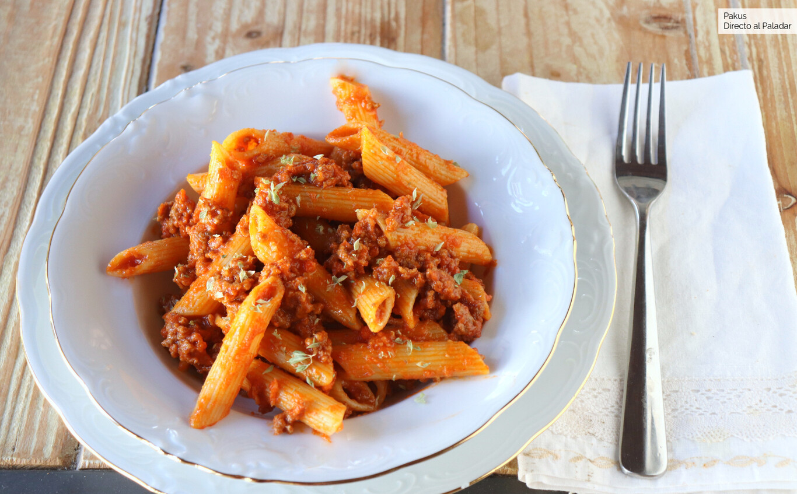

Macarrones
Quizas es una encuesta estratégica y también han publicado conclusiones sobre el ejército, bombas nucleares o refugiados políticos, que han pasado totalmente inadvertidas, de tan preocupados como estamos discutiendo si se tiene que poner cebolla a la tortilla

Ingredientes

- Macarrones
- Carne Picada
- Un poco de Sal
- 1 Cebolla
- Aceite de oliva virgen extra
- Ajo
- Pimienta Negra
- Tomate Frito
- Vino Blanco
Preparación
- Calienta agua en una cazuela, añade un poco de sal cuando rompa a hervir e incorpora los macarrones. Cuece la pasta el tiempo que indica las instrucciones.
- Pela y pica finamente los ajos y la cebolla. Pon a dorar en una sartén, con aceite, el ajo que acabas de picar. Al cabo de un par de minutos, añade la cebolla y deja que se cocine junto con el ajo.
- En un plato, desmenuza la carne picada y échale un poco de sal y pimienta.
- Cuando la cebolla esté blandita, incorpora la carne picada. Cocínala a fuego medio 2-3 minutos e incorpora el vino blanco. Cuando el alcohol se evapore, añade el tomate frito y deja todo cocinar durante 10 minutos aproximadamente. Comprueba que la sal está bien y sino corrige.
- Añade los macarrones cocidos a la sartén, revuelve bien y vierte todo en una bandeja apta para horno. Espolvorea un poco de queso por encima y mete en el horno 5 minutos, posición gratinado a 200°C. A continuación, retíralo y sírvelo en la mesa.
Información nutricional
- Grasa 18,53g 26%
- Grasa Saturada 0,799g 4%
- Grasa Monoinsaturada 1,718g
- Grasa Poliinsaturada 2,821g
- Carbohidratos 71,04g 27%
- Azúcar 4,06g 5%